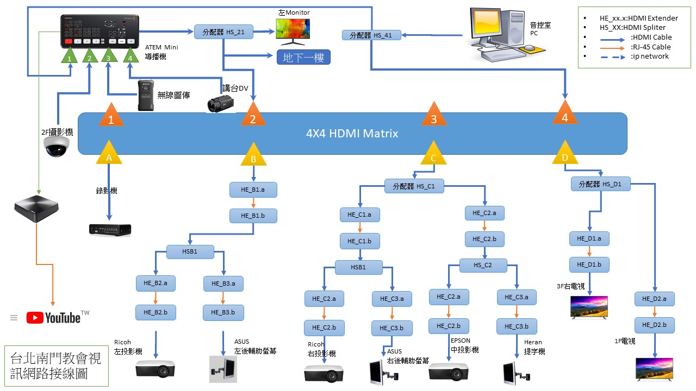

- 混音器SOP
- 網路直播SOP
- 網路直播盒
- 網路直播盒手冊
- ATEM直播機
- ATEM直播機簡介
- ATEM Q&A
- ATEM直播機手冊
- Resize PIP
- Atem PIP設定
- PIP巨集設定
- AW-RP555手冊
- 攝影機AWHE10
- OBS 直播軟體
- 投影機手冊
- 直播固定IP
- 調整直播音量
- 教會直播 make_list
HDMI矩陣器
1.(聚會時) 輸出A B C 切輸入4電腦輸出，輸出D 切輸入2導播機輸出。
2.平安禮時 輸出B 改切輸入2導播機輸出。
導播機
牧師講道時換投影片時，先切換ppt全螢幕，一段時間後再切子母畫面。
